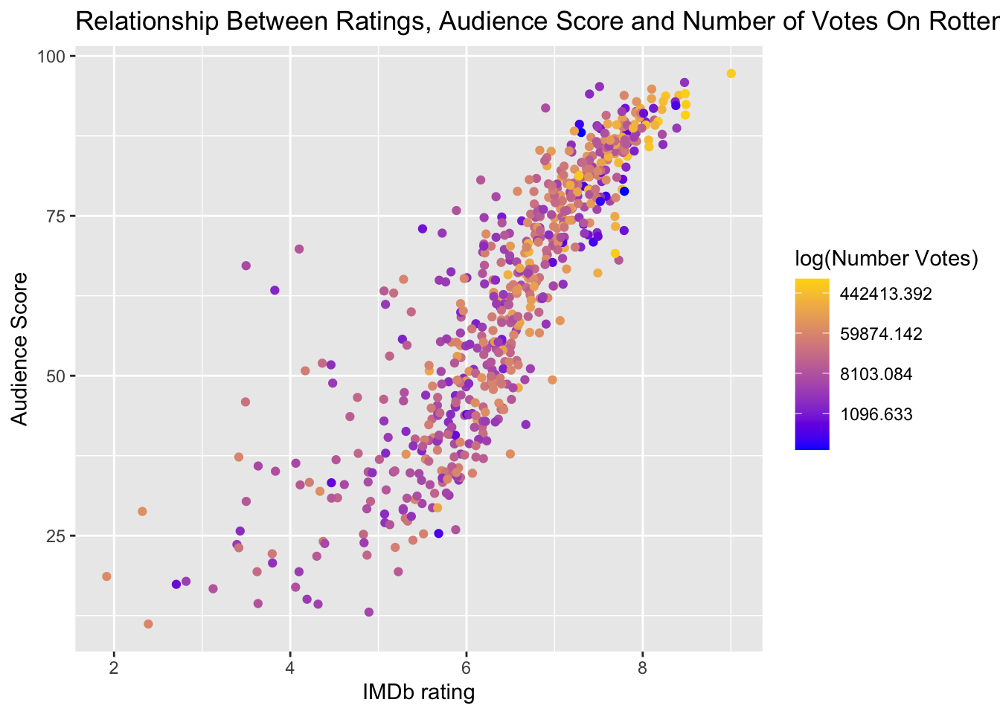

Solutions to WPA1
library('tidyverse')
con = url('https://github.com/laurafontanesi/r-seminar22/blob/main/data/movies.RData?raw=true')
load(con)
close(con)Task A
- Plot the relationship between:
imdb_rating,imdb_num_votesandaudience_score. - Change the coloring of the scatterplot. You can either have a look here or simply change the two colors in the gradients, and have a look for example here.
- Compute the regression for such relationship.
ggplot(data = movies, aes(x = imdb_rating, y = audience_score, color=imdb_num_votes)) +
geom_jitter() +
scale_colour_gradient(low = "blue", high = "gold", limits=range(movies[,'imdb_num_votes']), trans='log') +
labs(x = 'IMDb rating', y = "Audience Score", color="log(Number Votes)") +
ggtitle("Relationship Between Ratings, Audience Score and Number of Votes On Rotten Tomatoes")
# Run a regression
regression_fit = lm(formula = audience_score ~ imdb_num_votes + imdb_rating,
data = movies)
# Print summary results
summary(regression_fit)##
## Call:
## lm(formula = audience_score ~ imdb_num_votes + imdb_rating, data = movies)
##
## Residuals:
## Min 1Q Median 3Q Max
## -26.780 -6.535 0.654 5.701 52.861
##
## Coefficients:
## Estimate Std. Error t value Pr(>|t|)
## (Intercept) -4.221e+01 2.499e+00 -16.896 <2e-16 ***
## imdb_num_votes 6.909e-07 3.769e-06 0.183 0.855
## imdb_rating 1.610e+01 3.896e-01 41.322 <2e-16 ***
## ---
## Signif. codes: 0 '***' 0.001 '**' 0.01 '*' 0.05 '.' 0.1 ' ' 1
##
## Residual standard error: 10.17 on 648 degrees of freedom
## Multiple R-squared: 0.748, Adjusted R-squared: 0.7472
## F-statistic: 961.7 on 2 and 648 DF, p-value: < 2.2e-16Task B
- Plot the relationship between
best_actor_win,best_actress_winandaudience_score. - Compute the ANOVA for such relationship.
ggplot(data = movies, aes(x = best_actor_win, y = audience_score, fill = best_actress_win)) +
geom_boxplot() +
labs(x = "Best Actor Won Oscar", y = "Audience Score", fill = "Best Actress Won Oscar") +
ggtitle("Relationship Between Audience Score and Actors achievements")
# Run an ANOVA
anova_fit = aov(formula = audience_score ~ best_actor_win * best_actress_win,
data = movies)
# Print summary results
summary(anova_fit)## Df Sum Sq Mean Sq F value Pr(>F)
## best_actor_win 1 87 87.0 0.212 0.645
## best_actress_win 1 155 155.1 0.378 0.539
## best_actor_win:best_actress_win 1 318 317.7 0.775 0.379
## Residuals 647 265261 410.0Task C
- Plot the number of movies in each
mpaa_ratingcategory.
ggplot(data = movies, aes(x = mpaa_rating)) +
geom_bar() +
ggtitle("Number of movies in the database per mpaa_rating") +
labs(x = "mpaa_rating", y = "Count")